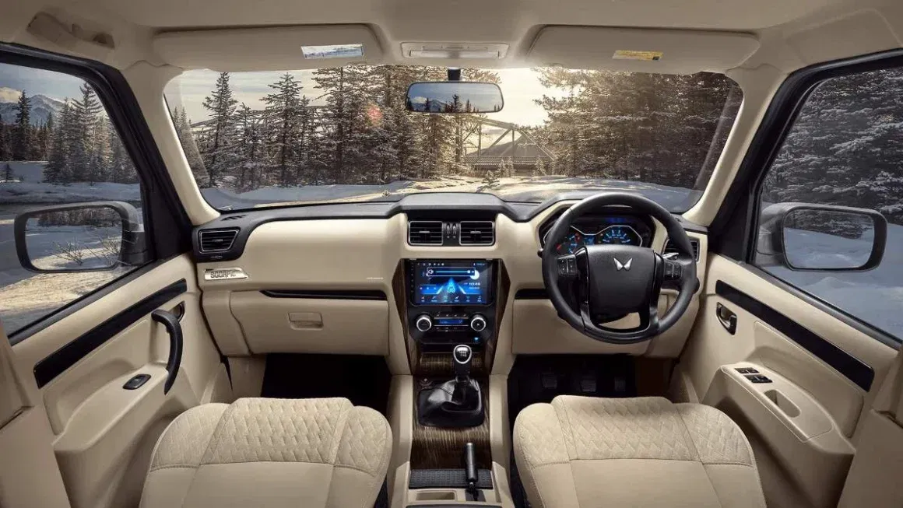

Mahindra Scorpio S11 Classic
Introduction
While there might be several SUVs flooding the Indian market, when it comes to choosing the best, only a few are truly able to deliver. From the toughest roads to the remotest destinations, if there’s one SUV that can tackle it all with grace, it’s the Mahindra Scorpio a.k.a the Scorpio Classic. An undisputed leader of the SUV segment, the Mahindra Scorpio has been the first choice of millions since 2002. A complete winner, especially when it comes to SUVs that are rugged, durable and reliable, the Scorpio delivers in every aspect. With a legacy of over two decades, the Scorpio has come a long way, constantly evolving to provide the best experience.
Now with the modern-day Scorpio N joining the league, the Scorpio Classic’s popularity has only grown, thanks to its capable all-terrain performance and ageless design, despite missing out on a 4×4 system. Currently in its fourth generation, the Scorpio Classic was and continues to be a path-breaking success, with over 9 lakh units sold. A veteran in every sense, the Scorpio’s charm continues to woo both fans and critics alike. So if you are in the market looking for an SUV that is tough, reliable, rugged, comfortable and truly practical, then the Mahindra Scorpio is definitely for you. So here’s a complete buying guide for the Mahindra Scorpio to help you analyse every little thing about the SUV, including specifications, variant lineup, and after-sales experience.
Why you should consider the Mahindra Scorpio
With several new-age competitors luring customers with top notch features and modern design language, the fact that the Scorpio Classic continues to be relevant is in itself a mighty achievement. As a tough, tireless and dependable machine that offers nothing but the best in terms of reliable performance, the Mahindra Scorpio Classis is a class apart. With its ladder-on-frame chassis and capable suspension setup, the Scorpio Class has what it takes to face all and every kind of terrain while offering a comfortable ride. If you are curious to know what makes the Scorpio a cult that it already is, here are a few reasons why you should consider the Mahindra Scorpio over other competitors in the same price bracket.
Old-School Style and Tough Character
When it comes to looks, there is no denying that the Scorpio Classic is timeless. Wearing an ageless design, the Scorpio’s biggest USP is its unconventional style. From head to toe, everything about the Scorpio speaks volumes about the SUV’s tough and rugged character. With its unmatched road presence, the Scorpio despite competing with C-segment SUVs, offers a stance that is taller even than the Toyota Fortuner, giving its users a commanding experience. When compared to competitors such as the Hyundai Creta, Kia Seltos, Tata Harrier, and Grand Vitara among others, the Mahindra Scorpio offers a classic and boxy look that strikes a chord every time with its high seating position and a commanding view of the road ahead. Despite being mostly the same for over a decade, the Scorpio has remained modern with frequent updates to its feature list over its life.
Practical and Comfortable in Every Sense
Another thing that makes the Scorpio Classic a true winner is its exceptional comfort that isn’t just limited to the front row. The Scorpio comes with both seven and nine-seater configurations offering an exciting choice to its buyers. Getting in and out is super easy, thanks to the Scorpio’s rear door, which takes practicality to a whole new level. The boot on offer is quite spacious, capable enough to store much more than what’s advertised. The cabin of the SUV feels highly spacious and airy, with a large wheelbase and a flat floor offering a relaxed ride even on long journeys. There’s a rear AC vent on offer as well, The leg, knee and headroom on offer are superb, and there is nothing much to complain about. When compared to new-age rivals, the Scorpio’s high seating position, nine-seater layout and high practicality quotient make it a perfect pick.
Interior
Impressive Performance
A big reason behind the Mahindra Scorpio’s undying popularity is its capable performance both on and off the road. With a 2.2-litre turbocharged diesel engine that is well-refined and lighter than what was offered in previous generations. The Scorpio offers linear performance with gradual RPM increases, translating into a fun driving experience. Overtaking is a breeze with the Scorpio with 77% of the 300 NM torque available at your disposal right from 1,000 RPM. The sole 6-speed manual on offer is cable-operated resulting in lesser vibrations and better refinement. The clutch too is light with good consistency. Despite missing out on a 4×4, the Scorpio with its impeccable suspension setup borrowed from the Scorpio N offers superb performance even when the going gets tough. All that complemented with a ladder-on-frame chassis makes the Scorpio Classic a capable SUV that can tackle even the toughest of roads even without a 4×4. And with micro-hybrid technology onboard, the fuel efficiency on offer is impressive with no effect on overall performance.
Why you should not consider the Mahindra Scorpio
While the Scorpio Classic offers some practical advantages over competitors, there still are a few compromises that must be considered before you make a decision, especially when the competition is high with a plethora of modern-day options. Here’s where the Scorpio lacks when compared to competitors in the same price bracket.
Bare Minimum Safety
Considering the Scorpio’s unmatched performance coupled with practical interiors for up to nine passengers, the safety on offer is only a bare minimum. Despite locking horns with rivals that offer great onboard safety, the Scorpio is unable to match up to the hype, especially in terms of safety. With only two airbags on offer, the Scorpio misses out on features like a reverse parking camera, an electronic stability program, and electronic brakeforce distribution. Considering that the Scorpio has a good amount of body roll, better safety features would have been much appreciated.
Lack of Features
With a price difference of almost Rs. 3.8 lakh, the Scorpio Classic is only available with either the base or the top-spec variant. While this deters away buyers who are trying to find the mid-way, the top-end trim despite offering everything that Mahindra has in store for the Scorpio still misses out on some crucial features that one would expect on an SUV of this budget. Apple Carplay, Android Auto, electronically folding ORVMs, wireless charging, USB power sockets and a sunroof, the Scorpio misses out on all these features that are now a standard expectation, especially onboard SUVs priced at almost 17 lakh.
Mahindra Scorpio Warranty and Service Costs
When it comes to making SUVs, there is no one better than Mahindra. With an inventory offering some of India’s best SUVs, Mahindra has been renowned for making long-lasting and reliable SUVs since 1945. Being a Mahindra product, the Scorpio comes with a 2-year/1,00,000 kilometres warranty with 24/7 roadside assistance. In terms of maintenance, the Scorpio offering a sole diesel option will demand an annual service cost of about Rs. 8 to 10 thousand. This makes Scorpio’s 5-year maintenance cost fall anywhere between Rs. 40 to 50 thousand.